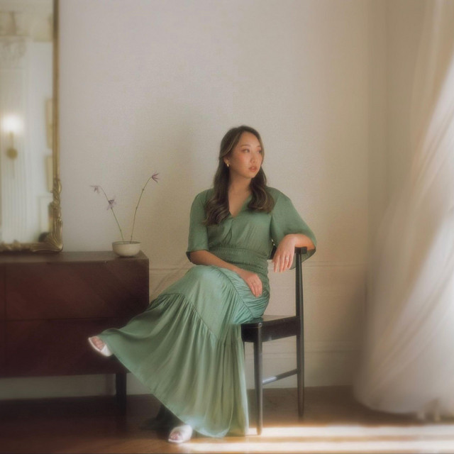
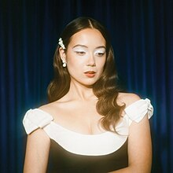
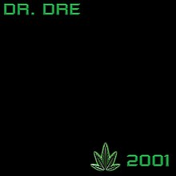
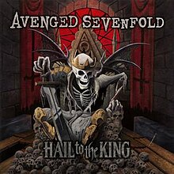

The day before that day I was at a friends apartment and I went home fairly late. It was about 1:30AM is when I went to bed. Because I went to bed that late I woke up at got out of bed late. It was around 11 AM was when I woke up and I just doomscrolled on Instagram Reels for hours until 1 PM to get out of bed and hit the showers. Once I got ready for the day my grandma had made Mi Quang for the family to eat which is a traditional dish of central Vietnam. While I ate I was watching some YouTube because of course I can't eat without watching something. I also watched some lectures for school and took some notes as I fear I'm a tad behind in my Finance Class. After that I went to a friends apartment to watch some lectures but then we got bored and decided to watch The Boondocks which is this adult animated show about a black family moving to a predominatly white area. The boondocks is one of my favorite shows and The Boondocks can be found of Max. It is really funny and I highly recommend you watch it.

I love listening to music. Whenever I'm driving, walking, working, hitting the gym, etc. I'm always listening to something. The app I use to listen to music is Spotify because I find their user interface like the yearly recap we get compiled of all the music I listen to as well as it shows me my top favorite or most listened to artists. I have two playlists that I listen to most. One of the playlists is titled "Fog Horn" It is my go to daily playlists that consists of Jazzy Pop, Classical Pop, Soft Pop, Pop, etc. I would say 99% of the songs in my playlist are love songs which I strive for. My "Fog Horn" playlists consists of the artists:
- Laufey
- Beabadoobee
- Sarah Kang
- And many more
Here are some of my favorite songs from this playlist
| Genre |
Song |
Artist |
| Jazz |
Moon Ride |
Sarah Kang, Anthony Lazaro |
| Soft Pop |
About Last Night |
Yel |
| Pop |
The Cutest Pair |
Regina Song |
 
The other playlist that I listen to when I want to take a break or feel for a change is titled "Huh". This playlist has all the songs I enjoy that are not the main genres of music I listen to. The playlists consists of the genres Rap, Old School Rap, Metal, Country, Jazz, and Pop. Whatever I hear from games, TV Shows, Movies, and music I hear when I’m out and about that I like are in this playlist. My “Huh” Playlist consists of the artists:
- Avenged Sevenfold
- Eazy-E
- Marty Robbins
- Dr.Dre
- And many more
 